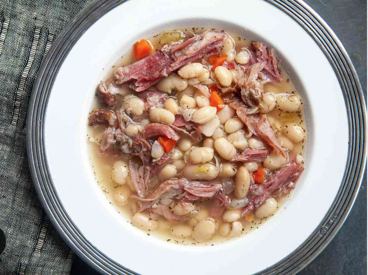

Slow Cooker Ham and Bean Soup

This hearthy ham and bead soup recipe is perfect for cold winter nights. Add a crusty baguette and a simple arugula salad.
Equipment
- Slow Cooker or Crock Pot over 4 qts.
Ingredients
- 1lbs. dry great northern or navy beans.
- 3-4lbs. smoked ham shank.
- 1 whole white or yellow onion.
- 3-4 stalks of celery.
- salt and pepper to taste.
- Water to fill.
Directions
- Fine dice onion and celery
- In slow cooker or Crock Pot put in ham shank, beans, onions and celery, peper to taste. Cover with Water
- Cook on high for four hours. Cook on low for six to eight hours.
- Remove ham shank bone shreed meat and return to pot.
- Add salt to taste as ham shank is already salty.
- Enjoy!
Return home